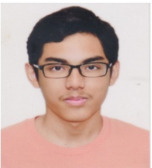

Muhammad Azreen Bin Muhammad
I am an undergraduate at the Singapore Institute of Technology, majoring in Applied Artificial Intelligence.
My specialization includes Large Language Models (LLMs), Computer Vision (CV), Natural Language Processing (NLP), Deep Learning, and Machine Learning.
I am passionate about leveraging AI technologies to solve real-world problems and have hands-on experience in developing and deploying AI models.
I am committed to continuous learning and staying updated with the latest advancements in AI.
👉 azreen654@gmail.com
👉 2200581@sit.singaporetech.edu.sg
Tech stack
Python, R, NodeJS
TensorFlow, PyTorch, Keras
NLTK, Transformers
OpenCV, Matplotlib, Plotly
Work History
🚧 SIT X HTX | Research Assistant
Jan 2025 – June 2025
Develop a scalable, near real-time 3D post-fire scene reconstruction application.
- Focus on 3D reconstruction and investigation of post-fire scenes
- Develop a scalable, near real-time 3D post-fire scene reconstruction application
- Utilization of 3D Gaussian Splatting (3DGS) for scene reconstruction for incomplete and damaged structures
incomplete and damaged structures
- 3DGS can achieve near-real time performance, e.g. less than 1hr on top of the 3DGS scene captured using camera
🚧 Freelance Software Engineer| Self-employed
Aug 2022 - Mar 2023
Developed 3D VR software for educational use for students. Additionally created a couple of 3D tech demo for educational use.
- Developed a 3D VR educational museum for children
- Created interactive exhibits to enhance learning experiences
- Implemented user-friendly navigation and immersive environments
- Collaborated with educators to ensure content accuracy and engagement
- Received positive feedback from users and educational institutions
🚧 Administrative Clerk | Singapore Armed Forces (SAF)
Sep 2020 - Jul 2022
Have facilitated the administrative task in regard to ICT training for reservist soldiers.
- Handled the call-up and mobilization of reservist soldiers
- Managed administrative tasks related to ICT training for reservist soldiers
- Lias and coordinate with different suppliers and bases based on the expected or immediate needs of the troops
🚧 Software Programmer | Aviation Virtual Pte Ltd
Sep 2019 - Feb 2020
Worked as a 3D VR programmer of various VR-related projects for clients in varying sectors.
- Developed 3d rigging and collison detection of eventmaps for certain ingame events to occur.
- Created a 3D heatmap for clients to observe where in a 3d scene has the most traffic from a person eye tracking